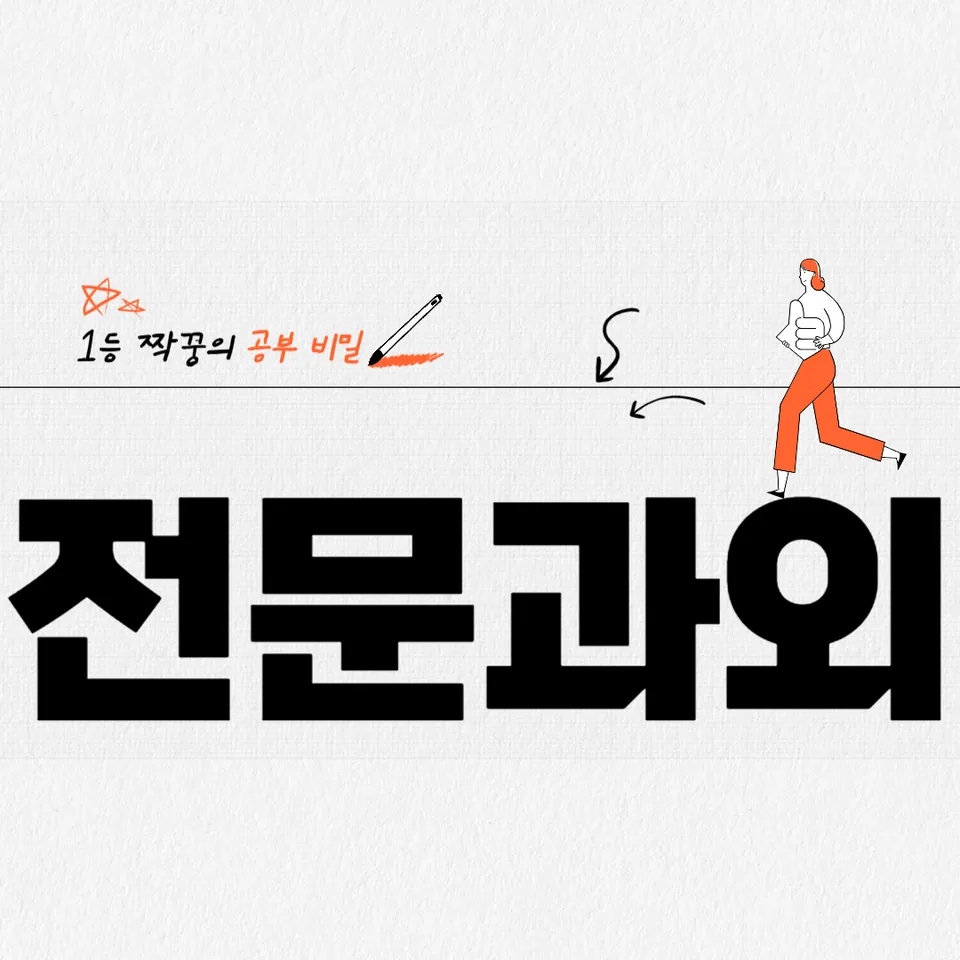

PageType : SUBJECT
URL : /경기도과외/여주시과외/홍문동과외/홍문동영어과외/
지역 교육환경이 영어 학습에 미치는 영향
홍문동영어과외를 알아보는 가정은 대체로 ‘학원 정보’보다 학교 주변 분위기와 학습 속도를 먼저 떠올립니다. 같은 수업을 들어도, 학교에서 영어 활동이 얼마나 자주 이어지는지에 따라 학생이 체감하는 학습 난도가 달라지기 때문입니다. 홍문동영어과외에서는 지역 내 학교가 수업 중 독해 확인을 얼마나 자주 하는지, 수행평가 준비가 어떤 방식으로 돌아가는지 같은 생활 단위를 기준으로 학습 루틴을 잡습니다.
또한 홍문동영어과외를 선택한 학생들은 공통적으로 듣기와 읽기를 ‘한 번에’ 처리하려는 경향이 나타납니다. 지역 학습 문화가 토론보다 문제 중심으로 흐를수록, 학생은 영어를 ‘맞히는 과목’으로 이해하고, 흥미가 유지되는 기간이 짧아집니다. 이때 중요한 건 지역 환경 그 자체를 탓하기보다, 영어 실력의 바탕이 되는 작은 습관을 꾸준히 연결하는 방향으로 접근하는 것입니다.
학습 분위기가 강한 지역일수록 시험 기간에 공부 시간을 몰아 쓰기 쉬워집니다. 홍문동영어과외에서는 평소에 짧은 시간이라도 듣기-어휘-독해의 순환을 유지해 두고, 시험 직전에는 오답과 복습을 중심으로 속도를 조절하도록 설계합니다. 그래야 학교 수업과의 결이 맞고, 학생이 영어를 배우는 과정에서 주도권을 잃지 않습니다.
학교마다 달라지는 영어 평가 방식
학교마다 내신 영어의 평가는 ‘문항 형태’뿐 아니라 학생이 준비하는 방식도 바꿉니다. 같은 문법이라도 문제 풀이 중심으로 끝나는 학교가 있는 반면, 홍문동영어과외로 학습을 병행하는 학생들은 수행평가에서 문장 구성이나 근거 제시 같은 요소를 더 자주 마주합니다. 이 차이가 커지면 학생은 어느 순간부터 ‘무엇을 연습해야 점수가 오르는지’ 감을 잃고, 영어 학습에 피로감을 느끼기 쉽습니다.
특히 학교가 구문을 직접 묻는지, 독해 과정에서 문장 구조를 활용하는지에 따라 학습 우선순위가 달라집니다. 홍문동영어과외에서는 학생이 시험 전에만 문장을 끊어 보는 습관이 생기지 않도록, 평소에도 글을 읽는 흐름 속에서 어휘 의미와 문장 이해를 동시에 확인하게 합니다. 이렇게 하면 내신을 준비할 때 학교에서 요구하는 평가 방식에 자연스럽게 맞춰집니다.
평가 방식이 달라질수록 오답의 성격도 바뀝니다. 학교가 듣기 비중을 올리면 같은 틀린 이유라도 발음·속도·맥락 이해가 원인일 수 있고, 읽기 비중이 높아지면 어휘 누적과 문장 구조 이해가 원인이 됩니다. 홍문동영어과외에서는 오답을 ‘틀림/맞음’으로만 정리하지 않고, 학생의 영어 실력이 어느 단계에서 막혔는지 기준을 세워 봅니다.
학생들이 영어에서 어려움을 느끼는 시점
대부분의 학생이 영어에서 어려움을 체감하는 시점은 중간고사 전후의 두 갈림길에서 나타납니다. 한 번은 어휘가 누적되기 전에 독해 지문을 빠르게 읽어버릴 때, 다른 한 번은 시험 준비가 시작되면서 듣기와 읽기 사이의 비율이 무너지기 시작할 때입니다. 홍문동영어과외로 방향을 잡는 학생들은 이 시기를 놓치지 않도록, 학습 중에 ‘막히는 순간’을 기록하는 것부터 시작합니다.
또래와 비교하며 영어를 재단하는 분위기가 강해질수록, 학생은 문법을 설명으로 다시 배우려 하기보다 “왜 이 문장은 이렇게 읽어야 해?”를 묻게 됩니다. 이 질문이 생기는 시점은 사실 학습이 성장으로 넘어갈 수 있는 전환점입니다. 홍문동영어과외는 이때 학생이 단서를 찾는 방식—어휘 선택, 문장 구조의 힌트, 문맥의 연결—을 스스로 정리하도록 돕습니다.
학습 부담이 커지는 시기에는 복습을 ‘숙제’로만 느끼며 오답을 덮어버리는 일이 많아집니다. 그 결과로 다음 시험에서 같은 유형이 반복됩니다. 그래서 홍문동영어과외에서는 학생이 영어를 공부하는 과정에서 자신이 언제 흥미를 잃는지 관찰하고, 그 구간의 학습 방식을 조정합니다.
학년 변화에 따른 영어 학습의 차이
학년이 올라가면 영어 학습 부담이 늘어나는 방식이 단순히 ‘양’의 증가로만 설명되지 않습니다. 학교가 내신에서 요구하는 사고 흐름이 더 세밀해지면서, 학생은 어휘를 아는 것만으로 끝나지 않고 문장 이해로 이어지는 연습이 필요해집니다. 홍문동영어과외는 이 변화에 맞춰 독해와 구문의 연결을 점진적으로 확장합니다.
예를 들어 낮은 학년에서는 한 문장의 의미 파악이 중심이 되지만, 중간 이후에는 문단의 역할을 읽어야 합니다. 학생은 같은 지문이라도 문장 사이 연결을 놓치면 전체 내용이 흔들리는 경험을 하게 됩니다. 이때 영어 독해는 속도 경쟁이 아니라 구조를 따라가는 과정이라는 감각이 생겨야 합니다.
상위 학년으로 갈수록 시험 형태가 촘촘해지며, 듣기에서 핵심 표현을 놓치면 읽기 문제까지 연쇄로 흔들립니다. 홍문동영어과외에서는 듣기와 읽기를 분리하지 않고, 한 번 들은 표현이 다음 읽기에서 어떻게 쓰이는지 확인하는 방식으로 균형을 잡습니다. 그렇게 하면 영어 실력은 시간과 함께 누적되는 형태로 자라납니다.
내신과 수행평가를 함께 준비하는 방법
내신은 시험 범위가 명확하지만, 수행평가는 준비 방식이 은근히 다르게 흘러갑니다. 학생은 수행평가에서 요구하는 형태—근거 제시, 문장 구성의 완결성, 표현의 일관성—을 먼저 이해해야 내신 대비도 매끄럽게 이어집니다. 홍문동영어과외에서는 학교에서 요구하는 결과물을 기준으로, 그 전에 필요한 어휘와 문장 이해를 학습 순서에 연결합니다.
내신 대비를 하면서도 수행평가 준비를 놓치면, 시험 전날에야 문장을 ‘급히’ 맞추게 됩니다. 이때 학생은 문법을 문제에 적용하는 경험을 충분히 쌓지 못해, 같은 유형에서도 점수가 흔들립니다. 홍문동영어과외는 평소 글쓰기나 말하기 같은 산출 활동이 없더라도, 독해 속 문장 패턴을 관찰하고 재사용하는 연습으로 수행평가의 감각을 만들어 줍니다.
오답은 내신과 수행평가 둘 다에 연결됩니다. 예컨대 내신에서 틀린 이유가 어휘 선택이라면, 수행평가에서도 표현이 바뀌어 감점이 될 수 있습니다. 그래서 홍문동영어과외에서는 오답-복습이 시험 직전에 끝나지 않도록, 학교 영어 평가 기준에 맞춘 체크리스트 형태로 이어지게 합니다.
꾸준한 학습 습관이 만드는 영어 실력
영어를 꾸준히 공부하는 습관은 ‘오래’가 아니라 ‘연결’에서 시작됩니다. 한 번의 학습이 다음 학습을 준비하게 만들면, 학생은 어휘와 문법을 분리하지 않고 함께 받아들이게 됩니다. 홍문동영어과외에서는 학생이 매일 같은 양을 채우기보다, 독해를 읽고—어휘를 확인하고—문장 이해로 되돌아가는 흐름을 유지하도록 설계합니다.
처음에는 학생이 “무슨 공부를 하는지”보다 “무엇을 끝냈는지”를 기준으로 삼습니다. 하지만 시간이 지나면 학습자는 스스로 자신의 영어 실력이 어느 구간에서 커지는지 느끼게 됩니다. 보통은 어휘가 누적되면서 독해 속도가 자연스럽게 나오고, 그 다음에 구문이 눈에 들어오며, 결국 듣기에서 핵심 표현이 들리는 순서로 자신감이 형성됩니다.
홍문동영어과외를 통해 자기주도학습이 자리 잡는 과정도 비슷합니다. 학생은 교재를 넘기는 방식이 아니라, 시험 범위와 학교 수업 흐름에 맞춘 학습 계획을 스스로 조정하려고 합니다. 이때 학부모가 느끼는 고민—“어떻게 관리해야 오래 갈까?”—은 정답을 대신 주는 것이 아니라, 학생이 복습과 오답 정리를 반복하는 구조를 지켜 주는 데서 풀립니다.
복습과 오답 관리가 중요한 이유
복습과 오답 정리는 학습량을 늘리는 일이 아닙니다. 학생이 영어를 배우는 과정에서 같은 실수를 줄여서 다음 시험의 불확실성을 낮추는 과정입니다. 홍문동영어과외에서는 오답이 나온 순간의 감정을 빠르게 정리하게 하고, 왜 틀렸는지 원인을 문장 이해, 어휘, 듣기 중 무엇으로 분류할지부터 정합니다.
학생이 오답을 제대로 다루지 못하면, 시험 기간에 공부 시간을 더 써도 결과가 덜 오르는 경험을 하게 됩니다. 그 이유는 문제를 다시 풀어도 원인이 남아 있기 때문입니다. 그래서 홍문동영어과외에서는 오답을 ‘다음에 또 틀릴 것’으로 보고, 반복되는 유형을 중심으로 복습 주기를 조절합니다. 이 과정에서 오답은 공부를 미루지 않게 하는 동력이 됩니다.
복습이 쌓이면 문법도 설명이 아니라 적용으로 자리 잡습니다. 예전에는 규칙을 외우는 데서 멈췄다면, 이제는 구문을 실제 문장 속에서 확인하고 같은 실수를 피하려는 태도가 생깁니다. 홍문동영어과외는 이 변화를 목표로 두고, 듣기와 읽기 균형이 무너질 때도 오답 관리를 통해 학습 방향을 재정렬합니다.
영어 학습에서 확인해야 할 핵심 요소
홍문동영어과외에서 학생을 점검할 때는 ‘무엇을 더 하는지’보다 ‘무엇이 연결되어 있는지’를 봅니다. 학교에서 진행되는 수업 흐름과 내신 학습 계획이 이어지고 있는지, 독해·문장 이해·어휘 학습·듣기 연습이 한 덩어리로 움직이는지 확인합니다. 이 핵심 요소가 맞물리면 학생은 시험 패턴이 바뀌어도 스스로 대응하는 힘을 갖게 됩니다.
또한 학생마다 학습 속도와 성장 과정이 다릅니다. 어떤 학생은 어휘가 빨리 쌓여 독해가 편해지고, 어떤 학생은 문법 적용에서 시간이 더 필요합니다. 홍문동영어과외는 속도를 비교하기보다, 현재 단계에서 필요한 복습과 오답 정리가 충분히 누적되고 있는지 점검합니다. 시간이 지나면 영어 실력은 갑자기 오르기보다, 듣기-읽기-어휘-구문이 연결되는 순간마다 차분히 커집니다.
학부모가 시험 기간에 자주 느끼는 불안도 여기서 정리됩니다. 시험이 가까워질수록 학습 패턴이 흔들리는데, 그럴 때일수록 자기주도학습의 기본 구조—학습 계획 유지, 복습 타이밍, 오답 재확인—가 작동해야 합니다. 홍문동영어과외는 학생이 공부 습관을 유지할 수 있도록, 시간 사용이 효율적이 되는 기준을 학습 과정에 심어 둡니다.
- 학교 시험 범위와 학습 계획이 연결되고 있는지 확인합니다.
- 독해·문법·어휘를 분리하지 않고 함께 학습하는 습관을 기릅니다.
- 오답의 원인을 분석하고 반복되는 실수를 줄이는 과정을 이어갑니다.
- 정기적인 복습으로 학습 내용을 장기 기억으로 연결합니다.
자주 묻는 질문
영어 학습은 언제부터 체계적으로 준비하는 것이 좋을까요?
학년이 올라가기 전에, 학생이 어휘 누적과 독해 흐름을 동시에 다루는 습관을 먼저 잡는 시기가 유리합니다. 홍문동영어과외는 학교에서 요구하는 평가 방식이 바뀌기 전부터 듣기·읽기 균형과 복습 구조가 자리 잡도록 돕습니다.
학교 내신과 모의고사는 어떻게 함께 준비해야 하나요?
내신은 범위와 평가 기준이 분명하므로 오답이 곧 다음 학습의 방향이 됩니다. 모의고사는 같은 어휘·구문을 더 넓은 맥락에서 쓰는 연습이 필요해, 홍문동영어과외에서는 내신 오답을 모의 유형으로 확장해 보는 방식으로 연결합니다.
영어 독해 실력은 어떤 과정으로 향상될 수 있나요?
독해는 속도보다 문장 이해의 정확도가 먼저 자리를 잡아야 안정됩니다. 어휘가 누적되고 구문이 눈에 들어오기 시작하면, 학생은 지문에서 중심 표현을 찾는 방식이 자연스럽게 생깁니다.
어휘와 문법은 어떤 순서로 학습하는 것이 효과적인가요?
문법을 설명으로 오래 붙잡기보다, 독해에서 실제로 마주친 문장 패턴을 기준으로 어휘와 함께 확인하는 순서가 효과적입니다. 홍문동영어과외에서는 문장을 통해 문법을 적용해 보는 시간을 늘립니다.
공부 습관을 꾸준히 유지하려면 무엇이 중요할까요?
공부 습관은 동기만으로 유지되지 않고 복습과 오답 정리를 통해 ‘다음 공부의 필요’를 느끼게 될 때 강해집니다. 홍문동영어과외는 자기주도학습이 자리 잡는 과정에서 학습 계획 유지와 효율적인 시간 사용 기준을 함께 세웁니다.
